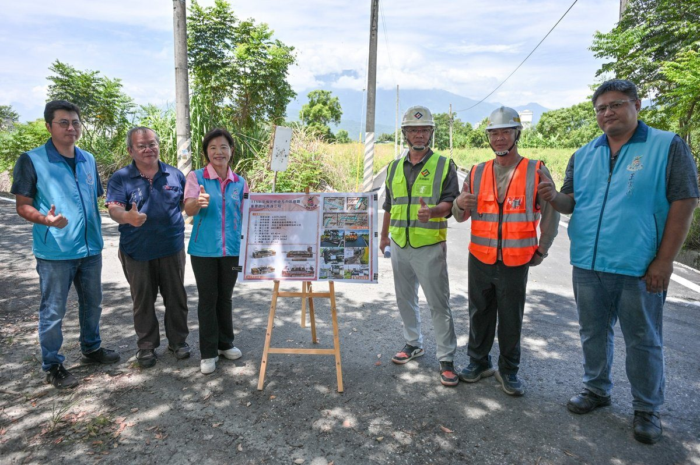

吉安鄉路平升級 安全再提升

可樂電子報小編/編輯
為進一步提升吉安鄉的道路品質與用路安全，吉安鄉公所積極推動115年度編號鄉道及市區道路的重要路段養護工程。在鄉長游淑貞的帶領下，建設課團隊與地方村長前往光華五街現場會勘，確認施工成果與改善效益。此項工程獲得居民一致好評，期待未來交通環境的全面提升。

此次道路工程包含路面切割、刨除舊鋪面，並鋪設再生瀝青混凝土和熱拌標線等項目，決標金額為新臺幣480萬元。截至目前，已有三處路段完成施工，佔比達92%。建設課強調後續將針對光華五街的部分路肩問題透過開口契約加強修整，進一步優化道路功能與安全。
吉安鄉秉持「路平、燈亮、水溝通」的核心政策，透過縣、鄉、村三級協力，積極改善地方基礎設施。面對居民所反映的老化問題，公所迅速行動，並爭取花蓮縣政府經費支持，以保障居民的出行安全與生活品質。未來公所将持续推動相關改善工程，實現宜居吉安的願景。